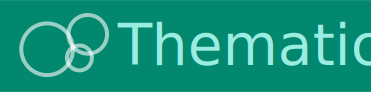
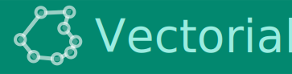
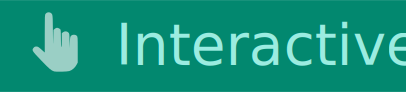
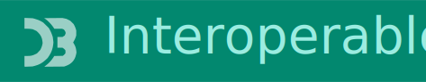
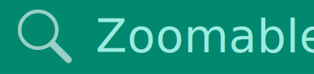

Geoviz JavaScript library
Tags #cartography #maps #geoviz #dataviz #JSspatial #Observable #FrontEndCartography
geoviz is a JavaScript library for designing thematic maps. The library provides a set of d3 compatible functions that you can mix with the usual d3 syntax. The library is designed to be intuitive and concise. It allow to manage different geographic layers (points, lines, polygons) and marks (circles, labels, scale bar, title, north arrow, etc.) to design pretty maps. Its use is particularly well suited to Observable notebooks. Maps deigned with geoviz are:
    
🌏 live demo Observable notebook simple map choropleth typology bubble dorling Mercator tiles
💻 Source code github
💡 Suggestions/bugs issues
Installation
In the browser
<script src="https://cdn.jsdelivr.net/npm/geoviz" charset="utf-8"></script>
In Observable notebooks
geoviz = require("geoviz")
Marks
The geoviz library provides several graphic marks that will allow you to draw your maps. circles, semi-circles, graticules, paths, scale, legends... Each mark has a specific function.
📚 Map marks path() circle() square() halfcircle() spike() tile()
📚 Layout marks header() footer() graticule() outline() north() scalebar() text()
📚 Legend marks legend.box() legend.choro_horizontal() legend.choro_vertical() legend.circles_half() legend.circles_nested() legend.circles() legend.squares() legend.squares_nested() legend.mushrooms() legend.spikes() legend.typo_horizontal() legend.typo_vertical()
For example:
// To display a geoJSON
viz.path({data: *a geoJSON*})
// World graticule
viz.graticule({fill: "#267A8A"})
// A legend for choropleth maps
viz.choro_horizontal({data: *an array of values*})
🌏 live demo path circle square halfcircle spike text tile legends
Container and render
To combine several marks into a single representation, we need to create an SVG container, add layers and display the result. In the container, you can specify the map size, projection, margins, etc.
In Observable
{
let world = await FileAttachment("world.json").json() // a geoJSON of world countries
let svg = geoviz.create({projection: d3.geoEqualEarth()}) // an SVG container
svg.outline({fill: "#267A8A"})
svg.graticule({stroke: "white", strokeWidth: 0.4})
svg.path({data: world, fill: "#F8D993", stroke: "#ada9a6", strokeWidth:0.5, tip:d => d.properties.NAMEen})
svg.header({fontSize: 30, text: "A Simple World Map", fill: "#267A8A", fontWeight: "bold", fontFamily: "Tangerine"})
return svg.render() // render
}
Same thing with Vanilla JavaScript
let world = "./world.json" // a geoJSON of world countries
d3.json(world).then(data => {
let svg = geoviz.create({projection: d3.geoEqualEarth()}) // an SVG container
svg.outline({fill: "#267A8A"})
svg.graticule({stroke: "white", strokeWidth: 0.4})
svg.path({data: data, fill: "#F8D993", stroke: "#ada9a6", strokeWidth:0.5, tip:d => d.properties.NAMEen})
svg.header({fontSize: 30, text: "A Simple World Map", fill: "#267A8A", fontWeight: "bold", fontFamily: "Tangerine"})
document.body.appendChild(svg.render()) // render
})
🌏 live demo containers insets
SVG filters
Design Attractive maps is important. That's why the geoviz library also lets you easily add SVG effects to your map.
📚 Effects effect.blur() effect.clipPath() effect.radialGradient() effect.shadow()
The plot function
The plot() function in allows you to call up all the layer types available in the library via a single function. It is the main function of the library.
See plot()
We can rewrite the previous example.
{
let world = await FileAttachment("world.json").json() // a geoJSON of world countries
let svg = geoviz.create({projection: d3.geoEqualEarth()}) // an SVG container
svg.plot({type:"outline", fill: "#267A8A"})
svg.plot({type:"graticule", stroke: "white", strokeWidth: 0.4})
svg.plot({type:"path", data: world, fill: "#F8D993", stroke: "#ada9a6", strokeWidth:0.5, tip:d => d.properties.NAMEen})
svg.plot({type:"header", fontSize: 30, text: "A Simple World Map", fill: "#267A8A", fontWeight: "bold", fontFamily: "Tangerine"})
return svg.render() // render
}
The draw function
The draw() function is inspired by the bertin library. It allows you to draw the entire map using a single function. As in bertin, all the necessary information is stored in a single JSON, containing general parameters and an array of objects describing the layers to be displayed and overlaid. Under the wood, the function draw() use the plot() function.
geoviz.draw({
layers: [
{ type: "outline", fill: "#267A8A"},
{ type: "graticule", stroke: "white", strokeWidth: 0.4 },
{ type: "layer", data: world, fill: "#F8D993", stroke: "#ada9a6", strokeWidth:0.5, tip:d => d.properties.NAMEen },
{type: "header", fontSize: 30, text: "A Simple World Map", fill: "#267A8A", fontWeight: "bold", fontFamily: "Tangerine"}
]
})
Statistical cartography
In addition of mapping static marks, the plot() and draw() functions lets you quickly create statistical maps (including legends) with very few parameters (and many others as options). Let's see some examples.
Proportional symbols
By using type = "prop", you can design a map with proportionnal symbols ("circle", "square", "halfcircle","spike"). Find below a minimal example.
geoviz.plot({type = "prop", data = *a geoJSON*, var = *a field*})
🌏 live demo prop
Choropleth
By using type = "choro", you can design a choropleth map. Find below a minimal example.
geoviz.plot({type = "choro", data = *a geoJSON*, var = *a field*})
🌏 live demo choropleth
Typology
By using type = "typo", you can design a qualitative typo map. Find below a minimal example.
geoviz.plot({type = "typo", data = *a geoJSON*, var = *a field*})
🌏 live demo typology
Proportional symbols + choropleth
By using type = "propchoro", you can design a map with proportionnal symbols with graduated colors. Find below a minimal example.
geoviz.plot({type = "propchoro", data = *a geoJSON*, var1 = *a field*, var2 = *a field*})
🌏 live demo prop
Proportional symbols + typology
By using type = "proptypo", you can design a map with proportionnal symbols with qualitative colors. Find below a minimal example.
geoviz.plot({type = "proptypo", data = *a geoJSON*, var1 = *a field*, var2 = *a field*})
🌏 live demo prop
Interactivity
Maps created by geoviz are zoomable and interactive.
🌏 live demo tooltip pan and zoom interactivity
Helpers
Finally, geoviz provides a toolbox of useful functions for cartography.
📚 tool.addfonts() tool/centroid() tool.choro() tool.typo() tool.dissolve() tool.dodge() tool.featurecollection() tool.geotable() tool.rewind() tool.merge() tool.proj4d3() tool.project() tool.unproject() tool.replicate() tool.ridge() tool.random() tool.radius()
🌏 live demo Handle geometries